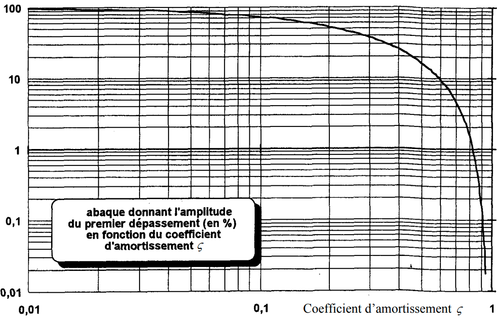
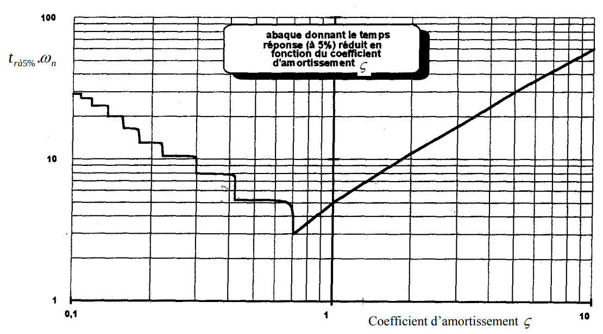
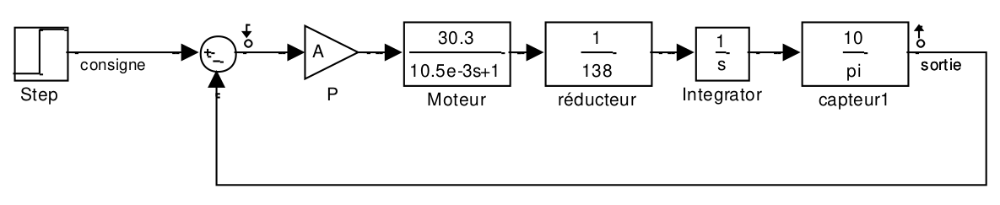

Séance 2¶
Objectifs de la séance¶
Etude de système d’ordre 2
Analyse de la réponse indicielle
Influence de zeta sur les caractéristiques temporelles : dépassement, temps de réponse, …
Lien entre ces caractéristiques et la position des pôles
from IPython.display import Image, display, Markdown
from control.matlab import * # Python Control Systems Toolbox (compatibility with MATLAB)
import numpy as np # Library to manipulate array and matrix
import matplotlib.pyplot as plt # Library to create figures and plots
import math # Library to be able to do some mathematical operations
import ReguLabFct as rlf # Library useful for the laboratory of regulation of HELMo Gramme
Réponse indicielle du \(2^{nd}\) ordre générale paramétrée¶
Soit un système du second degré : \( G(p)=\frac{K}{(\frac{p}{\omega_n})^2+\frac{2\zeta}{\omega_n}p+1} \) (cfr page 3-6)
Analysez pour les valeurs caractéristiques de zeta : 0.1 0.2 0.3 0.42 0.5 0.6 0.7 0.8 1 1.41 2 6 10 les réponses typiques cfr la page 3-9. Créez un script qui permette de tracer de manière itérative les différentes fonctions dont les différents zeta seront encodés dans un vecteur.
K=1
wn=1
# Définition des coefficients d'amortissement
zetas =[0.1, 0.2, 0.3, 0.4, 0.42, 0.5, 0.6, 0.7, 0.8, 1, 1.41, 2, 6, 10]
g=[]
# Création de la fenêtre à une taille donnée
fig = plt.figure("Steps",figsize=(20,10))
ax = fig.subplots()
# Réponse indicielle
# Calcule les différentes fonctions de transfert ainsi que la réponse indicielle
for i, zeta in enumerate(zetas):
n=K
d=[(1/wn)**2, 2*zeta/wn, 1]
g.append(tf(n, d)) # Ajoute la fonction de transfert à la liste 'g'
h=g[i]
rlf.step_(h, NameOfFigure='Steps', sysName=zeta);
Dépassement¶
Visualisez la valeur du dépassement pour les différentes valeurs de zeta et regardez l’influence de zeta sur la valeur du dépassement sur l’abaque de la page 3-11 : D ……. si zeta ……
Observez que les échelles de cet abaque sont logarithmiques. Par exemple, observez la valeur du dépassement lorsque zeta=0.5, sur la figure et indiquez clairement la position de ce point sur l’abaque.

Vérifiez par calcul :
\( D_p=100*e^{-\frac{k\pi\zeta}{\sqrt{1-\zeta^2}}} \)
Pseudo pulsation¶
Observez l’influence de zeta sur la pulsation d’oscillation \(\omega_d\) : \(\omega_d\) … si \(\zeta\) …
Temps de réponse à 5%¶
Visualisez la valeur du temps de réponse à 5 % pour les différentes valeurs de \(\zeta\) et regardez l’influence de \(\zeta\) sur l’abaque de la page 3-12.

Expliquez l’allure particulière de cette courbe :
si \(\zeta\)>1 : …
en \(\zeta\) = 0.7 : …
si \(\zeta\)<1 : « escaliers » dans la partie gauche car …
Pourquoi le \(t_{r_{5\%}}\) est-il identique pour un \(\zeta\) de 0,6 ou 0,5 ?
Position des pôles [TO DO]¶
Vous pouvez faire le lien entre l’allure de la réponse indicielle et la position des pôles dans le plan complexe tracé par la fonction pzmap(h).
# Création de la fenêtre à une taille donnée
fig = plt.figure("Pole Zero Map",figsize=(20,10))
ax = fig.subplots()
# Pour pouvoir boucler sur les couleurs standards afin de directement jouer avec les couleurs des graphes
from itertools import cycle
prop_cycle = plt.rcParams['axes.prop_cycle']
colors = cycle(prop_cycle.by_key()['color'])
# Trace les poles et zéros pour chacune des fonctions de transfert stockées dans 'g'
for i, zeta in enumerate(zetas):
h=g[i]
poles, zeros = rlf.pzmap(h, NameOfFigure="Pole Zero Map", sysName=zeta, color=next(colors));
plt.plot([poles.real[0], 0], [0, 0], 'k:'); # Ligne horizontale passant par 0 pour marquer l'axe des imaginaires
Pour chaque valeur de \(\zeta\), la fonction pzmap vous trace 2 croix pour indiquer les 2 pôles du système dans le plan complexe :
Pour \(\zeta=10\), les pôles sont en : ……… et ………
C’est le pôle en ……… qui domine dans le tracé de la réponse indicielle car ………
Si \(\zeta\) \(\searrow\) jusque \(\zeta=1\), les pôles se déplacent ………
Si \(\zeta<1\), les pôles deviennent ………
Si \(\zeta\) \(\searrow\) encore, les pôles se déplacent ………
Observez l’influence des pôles réels par rapport aux pôles complexes : …
et si \(\zeta<0\) : …
Exercice 1¶
Soit un système asservi à retour unitaire décrit par la fonction de transfert :
Etude de la réponse indicielle¶
num = 8
den = [1, 1, 10]
H = tf(num, den)
rlf.step_(H);
La fonction présente 2 pôles complexes conjugués et les constantes associées à sa réponse sont:
w, zetas, poles = damp(H);
_____Eigenvalue______ Damping___ Frequency_
-0.5 +3.122j 0.1581 3.162
-0.5 -3.122j 0.1581 3.162
Vous pouvez le vérifier en identifiant à la représentation canonique (p. 3-6) : …
Déterminez les caractéristiques de la réponse par les abaques :
le dépassement D% = ……………
le temps de réponse à 5% = ……………
et comparez avec les caractéristiques fournies par stepWithInfo :
la valeur atteinte en régime établi = ……………
l’erreur statique = ……………
le temps de réponse à 5% = ……………
le temps de montée = ……………
le dépassement D% = ……………
l’instant du premier pic tpic = ……………
Exercice 2¶
L’application 2 d’asservissement de position est décrite par le schéma bloc :

où A représente un correcteur proportionnel.
La fonction de transfert en BF de l’application d’asservissement de vitesse est :
Utilisez les abaques ou équations pour :
Prédire l’allure de la réponse indicielle du système si A=99 :
dépassement : ……………
temps de réponse : ……………
Déterminer le correcteur A si on veut un dépassement de 40% :
Vérifiez en traçant les réponses via python.